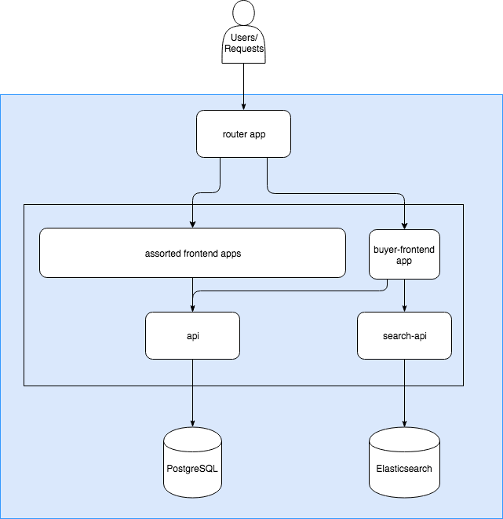
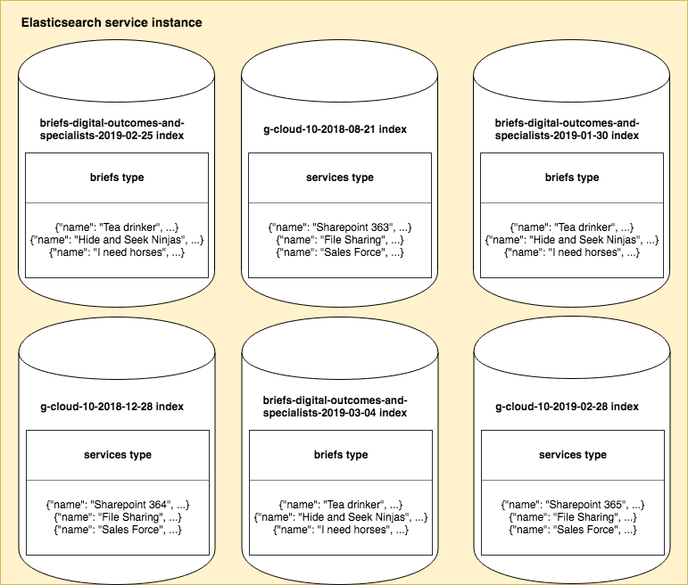

Elasticsearch¶
Contents
Where Elasticsearch data is used¶
Elasticsearch data is used in:
Digital Outcomes and Specialists brief search
https://www.digitalmarketplace.service.gov.uk/digital-outcomes-and-specialists/opportunities
This is a list of all Digital Outcomes and Specialists briefs from all iterations of the framework
G-Cloud services search
https://www.digitalmarketplace.service.gov.uk/g-cloud/search
This is a list of services on the current G-Cloud framework iteration
The data on these pages is retrieved from Elasticsearch via the search-api.
Data that Digital Marketplace gets from Elasticsearch¶
Digital Marketplace uses Elasticsearch to store data that needs to be searchable, filterable, retrieved quickly, and displayed in bulk. Elasticsearch is document oriented data store which means that every entry is stored and indexed as a JSON object called a document.
Digital Marketplace stores 2 types of documents, examples below…
Briefs¶
{ "_index": "briefs-digital-outcomes-and-specialists", "_type": "briefs", "_id": "4987", "_version": 1, "found": true, "_source": { "dmtext_applicationsClosedAt": "2017-06-14T23:59:59.000000Z", "dmtext_clarificationQuestionsClosedAt": "2017-06-07T23:59:59.000000Z", "dmtext_essentialRequirements": [ "Boil kettle", "Taste tea", "Wash mug", "Dry mug" ], "dmtext_id": 4987, "dmfilter_location": "London", "dmtext_location": "London", "dmfilter_lot": "digital-specialists", "dmtext_lot": "digital-specialists", "dmagg_lot": "digital-specialists", "dmtext_niceToHaveRequirements": [ "Talk snobbishly about water quality", "Sip quietly", "Provide biscuits" ], "dmtext_organisation": "NAO", "sortonly_publishedAt": "2017-05-31T10:40:48.086433Z", "dmtext_publishedAt": "2017-05-31T10:40:48.086433Z", "dmfilter_specialistRole": "developer", "dmtext_specialistRole": "developer", "dmfilter_status": "withdrawn", "dmtext_status": "withdrawn", "dmtext_summary": "Drink lots of tea. Brew kettle.", "dmtext_title": "Tea drinker", "dmtext_withdrawnAt": "2017-05-31T10:40:48.176191Z", "sortonly_idHash": "23ed5d9b3c1e3abdd487d4a20bb02c1d88d91373d06cc362bf4278800ea7b55a", "sortonly_statusOrder": [ 2 ] } }
Services¶
{ "_index": "g-cloud-9-2018-03-12", "_type": "services", "_id": "467823511339503", "_version": 1, "found": true, "_source": { "dmfilter_educationPricing": false, "dmfilter_emailOrTicketingSupport": "no", "dmtext_frameworkName": "G-Cloud 9", "dmfilter_governmentSecurityClearances": [ "dv", "sc", "bpss" ], "dmtext_id": "467823511339503", "dmfilter_lot": "cloud-support", "dmagg_lot": "cloud-support", "dmtext_lot": "cloud-support", "dmtext_lotName": "Cloud support", "dmfilter_phoneSupport": false, "dmfilter_resellingType": "not_reseller", "dmtext_serviceBenefits": [ "Reduces risk by drawing on experienced and skilled resources", "Ensures service management consequences are defined and understood", "Client side focus ensures truly impartial advice", "Ensure totality of services meet security requirements", "Demonstrate compliance with Digital by Default standards and GSDM", "Compatible with Actica’s other services for a total support package", "Compatible with Agile or Waterfall delivery approaches", "Sectors: defence, education, fire, health, justice, local authority, police, transport", "Understand and manage service transition risks", "Flexible resourcing to accommodate peaks and troughs in workload" ], "dmtext_serviceDescription": "Provides support during the procurement and delivery of business change programmes whether used in conjunction with SaaS, PaaS, IaaS, in-house service provision or outsourced service provision. Actica can provide a team to act as the Technical Design Authority (TDA), or experienced architects to support and strengthen an organisation's existing TDA.", "dmtext_serviceFeatures": [ "Assessment of architecture, technical and schedule risks and issues", "Identification and management of risk treatment plans", "Technical Delivery Assurance of supplier's deliverables and plans", "Compliance with architectural principles assessed", "Compliance with artefacts assessed (Enterprise, Information, Technical and Applications)", "Compliance with contract documents, requirements and dependencies assessed", "Commissioning support including tender assessment", "Developing high level designs and solution designs", "Assessing key technical and architecture options and designs", "Essential support for successful disaggregation of supply chain" ], "dmtext_serviceName": "Technical Design Authority and Delivery Assurance", "dmfilter_staffSecurityClearanceChecks": "staff_screening_not_bs7858_2012", "dmtext_supplierName": "Actica Consulting", "dmfilter_webChatSupport": "no", "sortonly_serviceIdHash": "84486e218fbfe137001d371a842c73a8fb98c21be92b711609b1c48c680f5879", "dmfilter_serviceCategories": [ "Planning", "Setup and migration", "Quality assurance and performance testing" ], "dmagg_serviceCategories": [ "Planning", "Setup and migration", "Quality assurance and performance testing" ], "dmtext_serviceCategories": [ "Planning", "Setup and migration", "Quality assurance and performance testing" ] } }
Digital Marketplace has a separate api (the search-api) to retrieve data from Elasticsearch, in a similar way to how the api fetches data from the Postgres database with SQL queries.
Requests made by the frontend apps to the search-api are converted to the HTTP request format expected by Elasticsearch. The search-api then converts the Elasticsearch response into a format the frontend apps can use.
Where Digital Marketplace finds that data¶
Furthering the above comparison to Postgres…
In Postgres we have a database instance (one), tables (many) and rows (many).
In Elasticsearch there are indices (many), types (one) and documents (many).
However, unlike a Postgres database, which may have many tables, an Elasticsearch index may only contain one document type.
This is demonstrated below in the diagrams of the internal structure of our data services…
Elasticsearch¶
As we can see many indexes can exist at the same time. Usually these are slightly different versions of the same data, denoted by a datestamp.
Note
You can check what indexes exist on what stage at the below links…
Benefits to multi-index single-type model¶
Keeping our Elasticsearch ‘types’ in separate indices has a number of benefits.
As of Elasticsearch 6 multiple types in one index is not supported.
It allows us to control index level settings on an an object type basis like:
results per window
shards for index
This gives us tighter control over performance if we begin to experience higher load on just one document-type index.
For example: if there were more interest in G-Cloud 10 closer to the opening date of G-Cloud 11 we could boost the number of shards for the g-cloud index and not the digital-outcomes-and-specialists one.
It allows us to create, manage and switch indexes based on the object type we’re indexing.
Where indexes are described¶
Mapping files that describe the indexes we can create are stored in digitalmarketplace-search-api/mappings.
These files are generated using the generate-search-config.py script in the digitalmarketplace-frameworks repo.
This generates search mapping files from search_mappings/<object_type>.json template files and the
manifests/<object_type>_search_filters.yml filter file.
The mapping files describe both the index itself and the data. They are used to create and query the index as well as transforming responses.
For more information on how the mapping files work see the digitalmarketplace-frameworks README ‘Search Mappings’ section.
What our indexes contain¶
How our indexes are named¶
We give the index a name based on the mapping file that was used to create it, suffixed by the date it was created. However this is in no way enforced.
For example:
briefs-digital-outcomes-and-specialists-2019-03-01
g-cloud-11-2019-07-01
How indexes are created¶
Indexes are created by passing a description mapping file as --create-with-mapping and index name as --index
argument to the digitalmarketplace-scripts/scripts/index-to-search-service.py script.
Note
For more information see the index-to-search-service.py docstring
The index is created on the stage specified by the <stage> argument.
It is then populated with the objects specified by the <doc_type> and --frameworks arguments.
For instance the command:
scripts/index-to-search-service.py briefs preview \
--index=dos2-briefs-2019-03-18 \
--frameworks=digital-outcomes-and-specialists,digital-outcomes-and-specialists-2,digital-outcomes-and-specialists-3 \
--create-with-mapping=briefs-digital-outcomes-and-specialists-2
Creates a new index
called
dos2-briefs-2019-03-18on
previewusing the
briefs-digital-outcomes-and-specialists-2.jsonmapping file from digitalmarketplace-search-api/mappings.
It then populates that index
with
briefson the
digital-outcomes-and-specialists,digital-outcomes-and-specialists-2anddigital-outcomes-and-specialists-3frameworks.
How indexes are populated¶
Elasticsearch indexes are populated from data in the Postgres database. We copy one or more records from the database as documents in to the index.
Single object updates¶
For briefs: indexing happens when the status is changed or when a brief is awarded. Operations on draft briefs do not trigger a reindex because they aren’t shown in the list of briefs we retrieve from Elasticsearch.
For services: creation, update or an update of status will trigger a reindex of the service.
Bulk object updates¶
When we create a new index we populate it with all relevant objects (eg all DOS briefs, or all the G-Cloud 11 services).
There are also catch up jobs (index-services and index-briefs) that run every night to ensure that objects in the index have the same information as objects in the database.
Manually updating¶
To manually refresh the objects in an index and make sure what’s in the index matches what’s in the database you can use the digitalmarketplace-scripts/scripts/index-to-search-service.py script again:
scripts/index-to-search-service.py services preview --index=g-cloud-11-2019-07-20 --frameworks=g-cloud-11
Updates the existing index
called (or aliased to)
g-cloud-11-2019-07-20with
serviceson the
g-cloud-11framework
You can also use the relevant Update index jobs on Jenkins as detailed in the Jobs section below.
Warning
There is no script or job for updating a single object. It is usually quicker and easier to rebuild the whole index.
Aliases¶
An Elasticsearch index can be referenced by its full name, but it can also have a shortcut name called an alias. When making requests to the Elasticsearch service the digitalmarketplace-search-api uses an alias. An alias is comparable to a url for an app.
The benefit to this setup is that we can create new indexes in the Elasticsearch service and only repoint the alias when we’re ready. This is how we create and switch over to new indexes without downtime.
The connection is always made to the alias name but the index behind the alias can be switched.
Create a new index
Repoint the alias
The script and jobs to update an index can also operate on an alias.
For example if we consider the above diagram and run:
scripts/index-to-search-service.py services preview --index=g-cloud-11 --frameworks=g-cloud-11
This will update the index
aliased to
g-cloud-11called
g-cloud-11-2019-07-28with
serviceson the
g-cloud-11framework
Warning
Index aliases are more important than index names.
The alias name we expect for Digital Outcomes and Specialists briefs is hard coded to briefs-digital-outcomes-and-specialists,
which covers all iterations of Digital Outcomes and Specialists. This is set in the
Buyer FE list_opportunities view.
The alias name we expect for G-Cloud iterations is the slug of the latest live framework iteration (currently g-cloud-11),
determined via a database query here.
Note
You can also check what aliases we’re using at these links:
Jobs¶
We have jobs on Jenkins to manage the creation and updating of indexes. When adding a new framework these jobs are not run automatically and must be triggered by a developer.
Create index¶
See the base template for these Jenkins jobs: create_index.yml.
Creates a new index on the relevant stage populated from the db with the specified objects from the specified frameworks. Use to create a new index from a mapping file and specified objects. Particularly useful when a preview or staging index has its database rebuilt, or if you have removed or replaced objects in the database and these changes need to be reflected in the index. Jenkins runs this job after rebuilding the preview DB from a snapshot (each weekend).
Update index¶
See the base template for these Jenkins jobs: update_index.yml.
Instead of creating, target an existing index (by name or alias), and update it from the db with the specified objects from the specified frameworks.
Warning
This job will not remove objects from the index that no longer exist in the database. If there are objects in the index that are not in the database then fully rebuild the index.
Update index alias¶
See the base template for these Jenkins jobs: update_index_alias.yml.
Given an alias name and a target index, create or replace the alias for the given index.
This will change which index sits behind an alias.
Catch-up jobs¶
These jobs use the above Update index job but with hard coded parameters. They are timed to run overnight as a failsafe, re-syncing any Elasticsearch records that have got out of sync for whatever reason.
Index briefs¶
See the base template for these Jenkins jobs: update_index_alias.yml.
This shortcut job runs the Update index job (at 3 am) targeted at the index currently identified by the
briefs-digital-outcomes-and-specialists alias and pushes all briefs in to that index.
Index services¶
See the base template for these Jenkins jobs: update_index_alias.yml.
This shortcut job runs the Update index job (at 2 am) targeted at the index currently identified by the
g-cloud-11 alias and pushes G-Cloud 11 services in to that index.
Manual (cleanup) jobs¶
If everything is working as expected then you shouldn’t need to use these commands; indexes are created, replaced and destroyed automatically.
Sometimes however it will be necessary to clean everything up. Orphaned indexes may have been left lying around after manually testing a new index or framework iteration. These are worth getting rid of, particularly on production where their names can be viewed on the search-api status page.
To do this we ssh in to a search-api instance and issue a curl command to the Elasticsearch service:
cf loginin to the space you want to operate incf env search-apiand find theSystem-Provided.VCAP_SERVICES.elasticsearch.urivaluecf ssh search-api(this is required because only search-api instances are bound to the Elasticsearch backing service)Supply the relevant curl command
curl -X DELETE "<FULL_URI_VALUE>/<INDEX_NAME>"to delete an index using curl
curl -X DELETE "<FULL_URI_VALUE>/<INDEX_NAME>/_alias/<ALIAS_NAME>"delete an alias using curl
Checking the Elasticsearch version¶
Warning
If doing this on production write an @here message on the #dm-development Slack channel before you SSH into the app.
Use the following steps to check the version of Elasticsearch running in PaaS:
cf loginin to the space you want to operate incf env search-apiand find theSystem-Provided.VCAP_SERVICES.elasticsearch.urivaluecf ssh search-api(this is required because only search-api instances are bound to the Elasticsearch backing service)curl -X GET <FULL_URI_VALUE>exitto close the SSH tunnel.